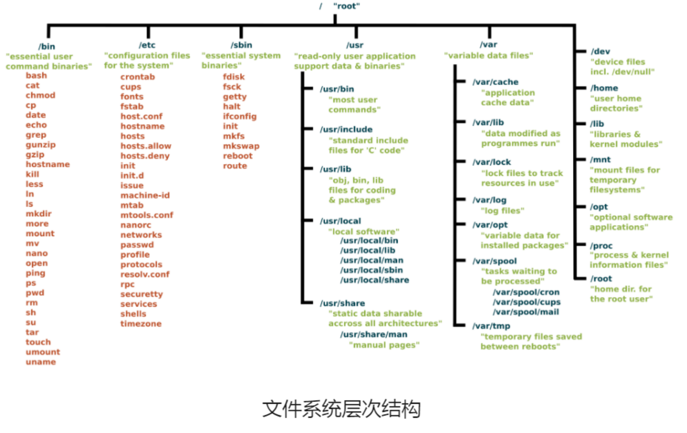
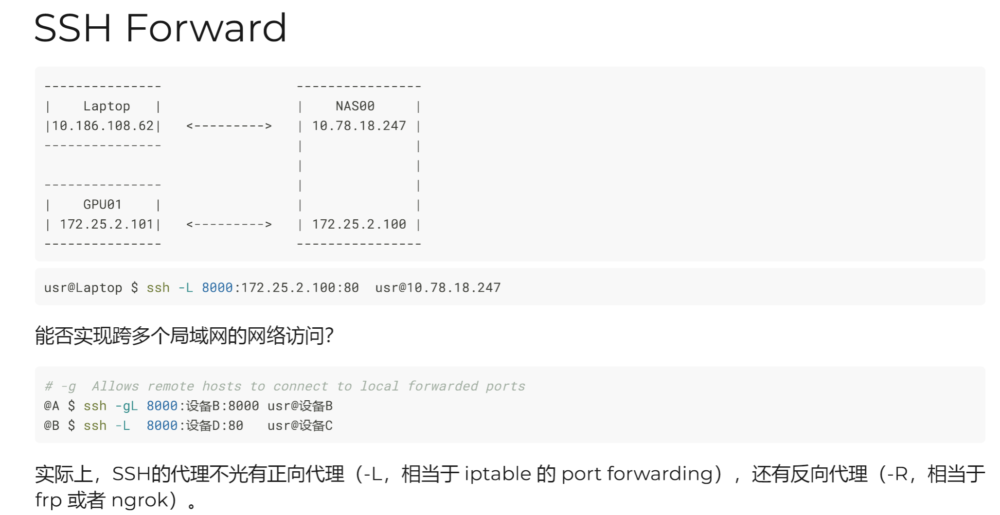

7月6日 集群软硬件以及运维基础
Linux基础操作
本讲有部分内容我放到/missing semester/Linux 中去了
-
学习建议：ChatGPT ；-- help； man
-
Linux会有很多发行版，Ubuntu笔记容易上手，大多集群使用的是Debian。
-
用户管理：
/etc/passwd(用户名：密码表示：UID：GID组别：描述性内容：主目录：默认shell)
密码在/etc/shadow
-
passwd [user](集群下如果开了NIS则要用yppasswd) -
文件系统

注：/opt中会有一些可选的东西；/mnt一般用来挂在硬盘
lsblk用来显示分区 ;df可以看到磁盘使用情况mount(need the su authority)umount -l(lazy) -f(forced)- git的使用！！！（智云课堂42：34左右开始）（可以下载git line插件）
make && make installps进程管理，kill杀死进程，htop在线监管- 终端分块：
tmux
$ tmux new -s <name>
# 分离对话
$ tmux detach
或者 ctrl+B 再按 D
# 重新建立连接
$ tmux attach -t <name>
# 使用会话名称
$ tmux switch -t <session-name>
# rename
$ tmux rename-session -t 0 <new-name>
拆成左右两边
ctrl+B+%
看所有section
ctrl+S
# 列出所有快捷键，及其对应的 Tmux 命令
$ tmux list-keys
# 列出所有 Tmux 命令及其参数
$ tmux list-commands
# 列出当前所有 Tmux 会话的信息
$ tmux info
# 重新加载当前的 Tmux 配置
$ tmux source-file ~/.tmux.conf
- ctrl+B 再按 '['就可以上下活动光标
- 网络：会有端口
netstat -a # 列出所有端口
netstat -pt # 显示所有PID和进程的名字
iptables -L -n # 查看端口是否开放

NAS00 起到跳板机的作用
- 传输文件可以通过
scp或者xftp/xshell
集群
- HPC集群，node节点
- 服务器（主流高性能NVlink AI服务器；开放加速生态OAM AI服务器；高适应性PCLeAI服务器）
- FLOPS（每秒浮点运算次数）； Latency（延迟）； Bandwidth or throughout（吞吐量）
- PCLe(Peripheral Component Interconnect Express): 高速串行计算机扩展总线标准
- 存储协议：SATA；NVMe
- M.2是一种接口
- NVLinke服务器是NVIDIA的显卡交互的通信协议
- IPMI（intelligentPlatform Management Interfere）智能平台管理接口
- BMC网络管理平台
- 环境管理可以看看：environment Module
- Slurm集群管理和优化用
- sbatch:用于将作业提交到队列
- srun：直接再Slurm集群运行命令或者程序
- squeue：查看在队列中的作业
- sinfo：用于查看Slurm管理的节点和分区的情况
- Scancel：用于取消已经提交的作业
- Salloc：交互式作业请求资源
- NVIDIA和Intel都有相关HPC的套件